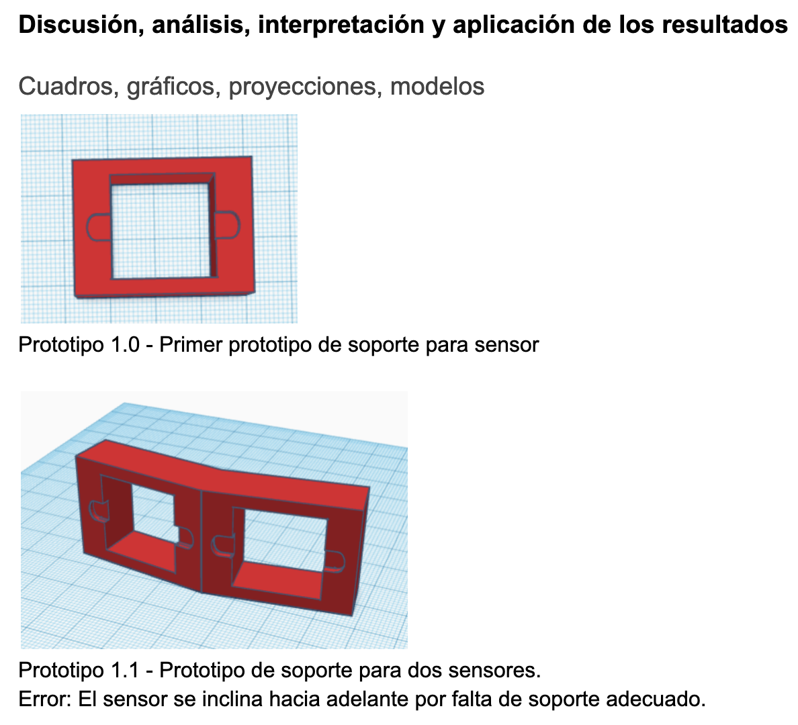
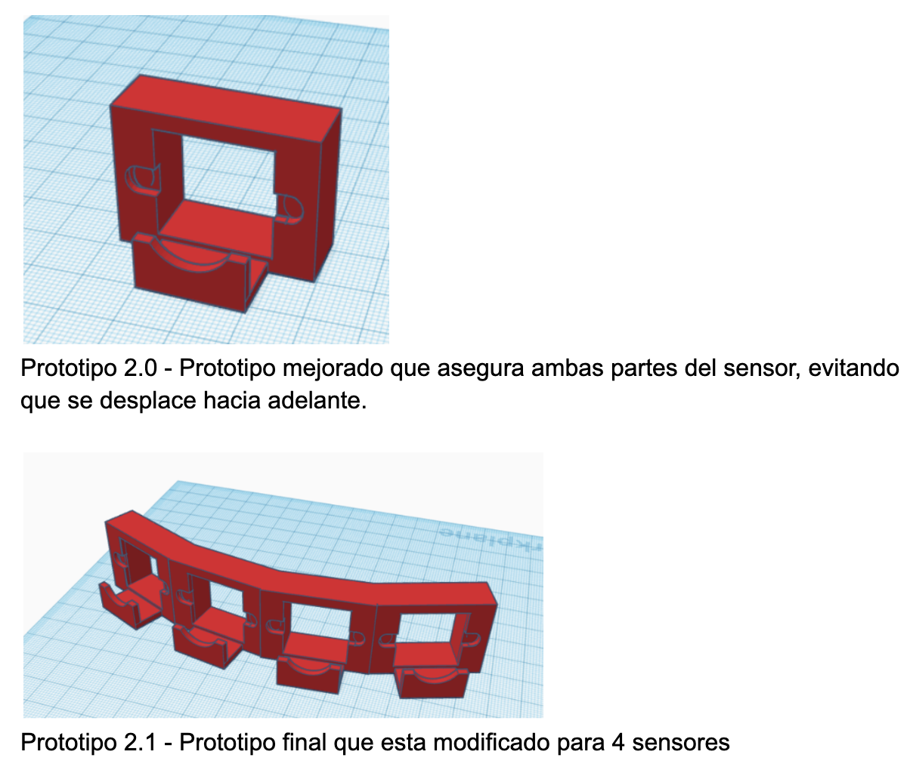
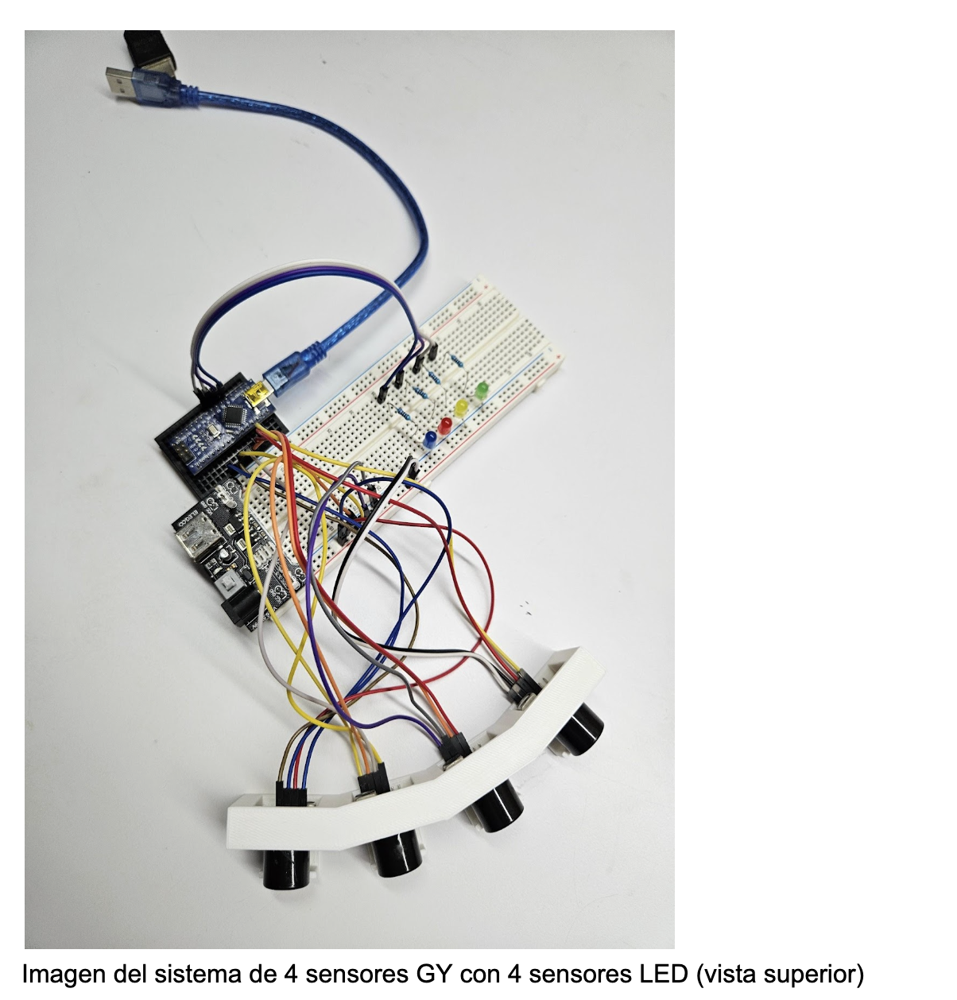
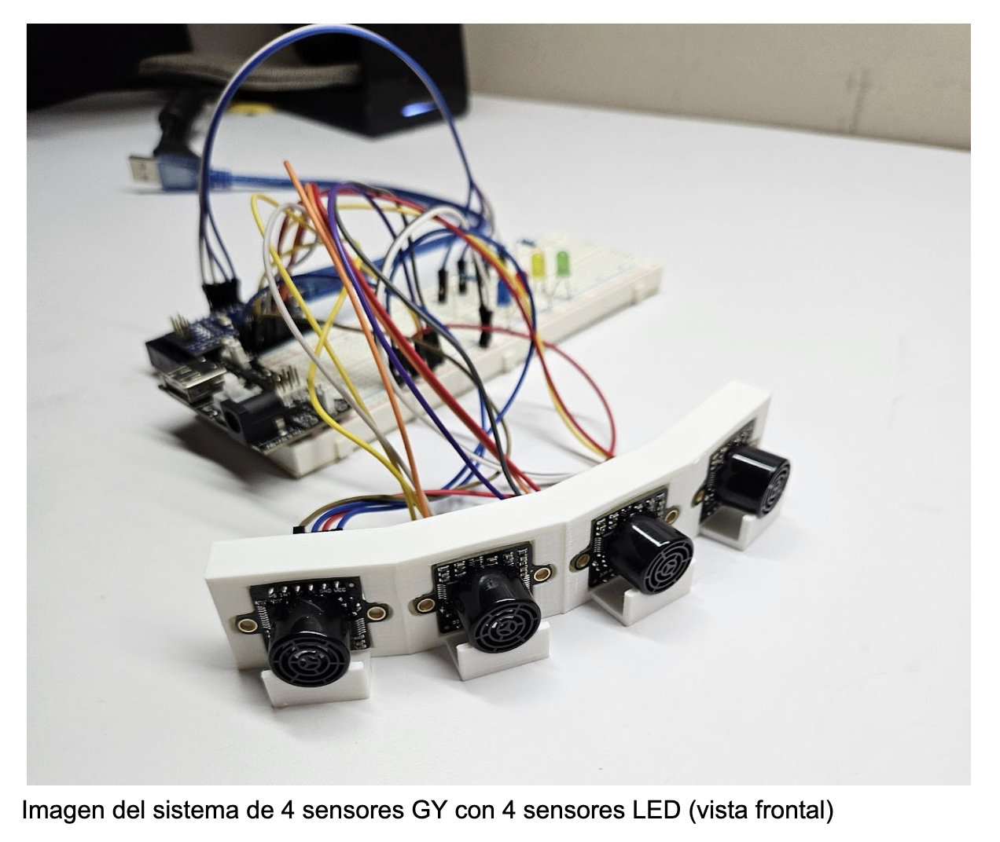
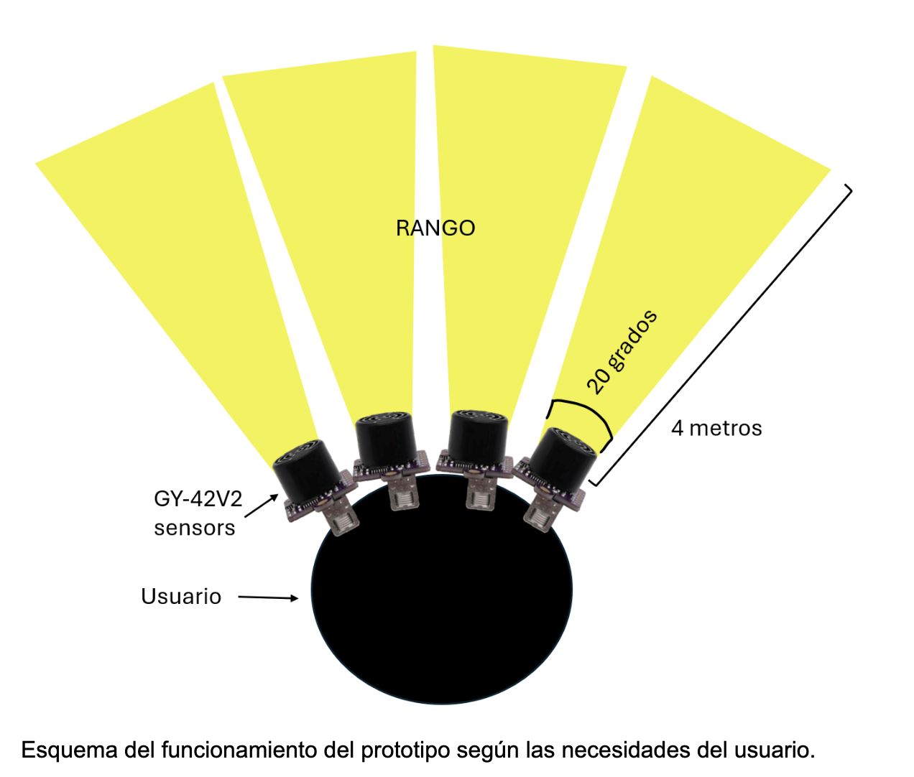

Informe
Resumen
Aproximadamente 338 millones de personas a nivel mundial presentan problemas de visión severos.
Estas personas enfrentan desafíos significativos al salir de sus casas, ya que el mundo está diseñado para quienes pueden ver.
Para ayudar a mejorar su calidad de vida, hemos desarrollado un Sistema Integrado de Percepción y Respuesta Auditiva para Discapacitados Visuales (SIPRADV).
Utilizando un casco que detecta y alerta al usuario de la presencia de objetos en la periferia mejorando asi la percepción del entorno.
Este proyecto surgió de la necesidad de brindar una herramienta que permita a las personas con discapacidad visual desplazarse de manera más segura y autónoma.
Utilizamos un microcontrolador y cuatro sensores ultrasónicos que monitorean el entorno de la persona, detectando cambios en la distancia de los objetos cercanos y emitiendo un aviso a través de audio.
Nuestro objetivo es proporcionar a estas personas mayor libertad en las calles sin sacrificar su seguridad, mejorando su percepción espacial para que se sientan más independientes e integrados en la sociedad.
Este casco no solo representa un avance tecnológico, sino también un paso hacia la inclusión.
Queremos que las personas con problemas de visión se sientan más confiadas y capaces de enfrentar su entorno.
Creemos que la tecnología debe ser accesible para todos, y con esta solución esperamos ofrecer un recurso que realmente marque la diferencia en la vida de quienes más lo necesitan.
Además, el sistema es fácil de usar, lo que garantiza que pueda ser adoptado por una amplia gama de usuarios sin complicaciones.
Pregunta de investigación
¿Cómo impactan los SIPRADV con sensores en la autonomía y calidad de vida de las personas con discapacidad visual?
Contexto Nacional
La Universidad Tecnológica de Panamá desarrolló un dispositivo diseñado para ayudar a personas con discapacidades visuales. Este dispositivo utiliza un sensor ultrasónico HC-SR04 montado en una caja que se coloca en el pecho del usuario. Aunque el dispositivo proporciona una funcionalidad valiosa al alertar sobre obstáculos mediante el sensor, su diseño actual presenta limitaciones significativas. La caja en la que está montado el sensor puede ser bastante voluminoso, lo que puede resultar en una obstrucción incómoda para el usuario en su vida diaria.
Conscientes de estas limitaciones, decidimos emprender un proyecto para mejorar este dispositivo. Nuestro objetivo es desarrollar una solución más compacta y menos intrusiva que mantenga la funcionalidad del sensor ultrasónico pero con un diseño más ergonómico. La nueva propuesta busca minimizar la interferencia con el movimiento del usuario y ofrecer una experiencia más cómoda y práctica. Así, esperamos mejorar la calidad de vida de las personas con discapacidades visuales, facilitando su movilidad y autonomía en su entorno cotidiano.
Estudiante de la UTP presenta dispositivo para personas con discapacidad visual - Decisiones Panamá (decisionespanama.com)
Nunc lacinia ante nunc ac lobortis. Interdum adipiscing gravida odio porttitor sem non mi integer non faucibus ornare mi ut ante amet placerat aliquet. Volutpat eu sed ante lacinia sapien lorem accumsan varius montes viverra nibh in adipiscing blandit tempus accumsan.
Hipótesis
La implementación de un sistema de detección de obstáculos basado en sensores ultrasónicos avanzados (GY-US42V2) y audio espacial direccional en dispositivos de asistencia para personas ciegas, permitirá mejorar significativamente su percepción espacial y reducir la incidencia de colisiones.
Metodología
Materiales Necesarios:- 1 Arduino Nano
- 4 Sensores ultrasónicos GY-US42V2 (en modo UART)
- 1 Módulo DFPlayer Mini
- 1 Memoria de 32 gb
- 2 Altavoces mini de 3 watts
- 4 LEDs
- 4 Resistencias de 220Ω para los LEDs
- 1 Batería (incluye cargador)
- Cables de conexión y una placa de pruebas (breadboard)
- Alimentar el Arduino Nano conectando la batería al pin Vin y GND.
- Asegúrate de que todos los componentes comparten una conexión a GND para un circuito común.
- Conectar el pin VCC de cada sensor al pin 5V del Arduino Nano.
- Conectar el pin GND de cada sensor al pin GND del Arduino Nano.
- Para la comunicación UART, conectar los pines TX de los sensores al pin RX (D0) del Arduino Nano, y los pines RX de los sensores al pin TX (D1) del Arduino Nano.
- Si es necesario, añadir resistencias o un divisor de voltaje en las líneas de UART para estabilizar la señal.
- Conectar el pin VCC del DFPlayer Mini al pin 5V del Arduino Nano.
- Conectar el pin GND del DFPlayer Mini al pin GND del Arduino Nano.
- Conectar el pin RX del DFPlayer Mini al pin digital D6 del Arduino Nano para la comunicación en serie.
- Conectar los pines de salida de audio SPK+ y SPK- a los dos mini altavoces.
- Conectar el ánodo (pata larga) de cada LED a los pines digitales D2, D3, D4 y D5 del Arduino Nano.
- Conectar una resistencia de 220Ω en serie entre cada ánodo de LED y el pin del Arduino para limitar la corriente.
- Conectar el cátodo (pata corta) de cada LED a GND.
- Escribir el código para que el Arduino Nano reciba datos de los sensores GY-US42V2 y controle los LEDs según la distancia detectada.
- Añadir la lógica para que el DFPlayer Mini reproduzca un sonido si los sensores detectan un objeto en una distancia menor a un umbral específico (por ejemplo, 20 cm).
- Asegurarse de que los LEDs enciendan cuando los sensores detecten objetos, proporcionando una indicación visual de que los sensores están funcionando correctamente.
- Alimentar el circuito y verificar que los sensores GY-US42V2 funcionan correctamente midiendo distancias.
- Probar los LEDs para asegurarse de que se encienden cuando un objeto es detectado dentro del rango especificado.
- Probar el DFPlayer Mini para asegurarse de que reproduce el sonido desde los altavoces cuando se detecta un objeto cercano.
- Ajustar la programación o las conexiones según los resultados de las pruebas.
- Si es necesario, ajustar las posiciones de los sensores para evitar interferencias o mejorar la precisión de la detección.
- Verificar el rendimiento de la batería y optimizar el consumo de energía si es posible.
Se implementaron diversos códigos, con resultados variables. Se probaron diferentes métodos, cada uno con su correspondiente código (todos los códigos se encuentran en el anexo).
    Conclusiones y recomendaciones
Con el uso de un Arduino Nano, sensores ultrasónicos y un reproductor de música, se desarrolló un prototipo funcional diseñado para asistir a personas con discapacidad. Este dispositivo facilita la detección de obstáculos y proporciona retroalimentación auditiva, contribuyendo a mejorar su movilidad y seguridad.
Con base en los resultados obtenidos, se proponen las siguientes recomendaciones para mejorar el prototipo y su funcionalidad:
Evaluación de sensores:Comparar el rendimiento entre los sensores HC-SR04 y GY-US42V2 para determinar cuál se adapta mejor al proyecto.
Uso del modo UART:Priorizar el modo UART en los sensores GY-US42V2 sobre PWM o I2C para mejorar la estabilidad y transmisión de datos.
Fuente de energía:Seleccionar la mejor fuente de energía en función del consumo total del proyecto, considerando opciones como baterías recargables o LIPO.
Optimización del sistema de sonido:Implementar retroalimentación auditiva con distintos tonos o volúmenes según la proximidad de los obstáculos.
Spacial audio:Incorporar sonido direccional, de manera que el usuario reciba la señal auditiva desde la dirección en que se detecta un obstáculo.
Reducción de tamaño y peso:Diseñar una carcasa más compacta para facilitar el uso del dispositivo.
Pruebas en distintos entornos:Realizar pruebas en diversas condiciones para asegurar un rendimiento confiable en diferentes situaciones.
Compatibilidad:Explorar la integración con otros dispositivos de asistencia para aumentar su versatilidad.
Referencias bibliográficas
- Lee, J., Smith, R., & Johnson, T. (2022). Advances in Ultrasonic Sensor Technology. Journal of Assistive Technologies.
- Miller, A. (2019). Spatial Audio for Accessibility. Audio Engineering Society.
- Smith, K., & Johnson, M. (2020). Technological Innovations in Mobility Assistance for the Visually Impaired. Disability and Rehabilitation.
- Tactile, R. (2018). Exploring Spatial Perception in Individuals with Visual Impairments. Journal of Visual Impairment & Blindness.
- Wang, X., & Chen, Y. (2021). Integrating Sensor and Audio Feedback Systems for Enhanced Navigation. IEEE Transactions on Human-Machine Systems.